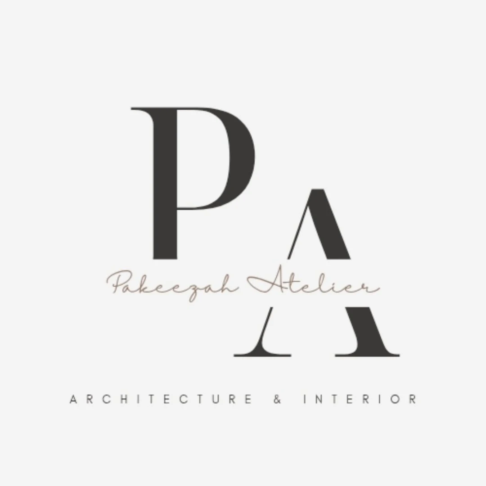
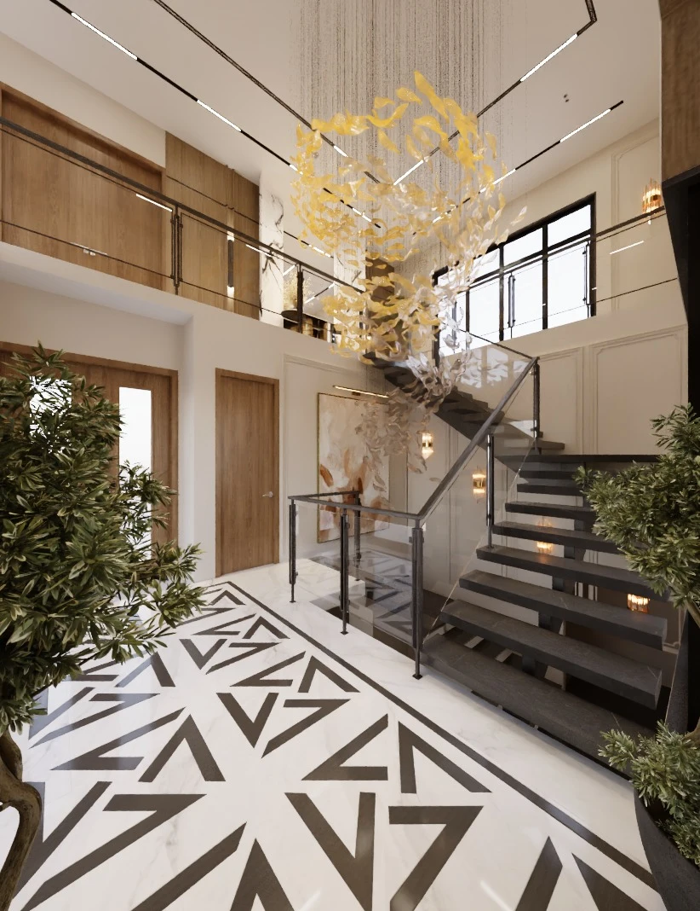

A WAY
OF LIVING.
A home.
Designed in detail.
Built on site.
DESIGN VISUALISATION / 01↗
Architecture is the frame.
Interiors are the feeling.
Making brings it home.
Pakeezah Atelier brings architecture, interiors, construction and turnkey projects into one conversation. A practice shaped by both the drawing and the work on site.
See the work behind it ↗
MADE WITH CARE.
On site.
work.
A drawing is a beginning.
The work happens here.
Before the finish.
Behind the surface.
On the site.
An entrance.
Three details.
From the pattern underfoot to the volume above. Read the entrance through its surfaces, movement and light.

A threshold,
not just a doorway.
Study focus: how pattern, warm surfaces and a vertical focal point shape the experience of entering a home.
A route through the room.
The dark and light stone pattern gives the floor a strong direction. Against the calmer timber and pale walls, it becomes the most graphic surface in the entrance.
Notice how the pattern continues towards the stair.- SPACE
- Double-height entrance
- FORMAT
- Two design visualisations
Geometry sets the rhythm.
The floor leads.
The timber warms.
The stair draws you upward.
PRIVATE
worlds.
Different spaces.
Different ways of living.
Design visualisations from the atelier.
Material notes,
up close.
Timber, stone and light.
Three details that shape the space.
Vertical timber slats introduce a fine, repeated rhythm beside the bathroom’s veined stone. The cabinetry carries the warmth lower into the space.
THREE DETAILS. ONE DESIGN LANGUAGE.What would you
like to build?
Talk to the atelier+91 72500 71666 ↗